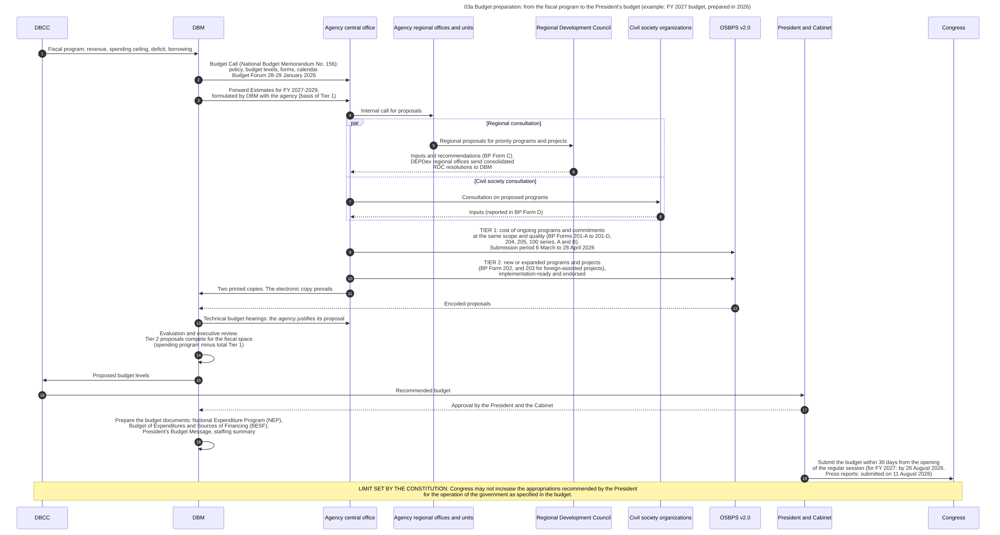

Diagram 03a · Mermaid sequence diagram
Budget preparation: from the fiscal program to the President's budget (example: FY 2027 budget, prepared in 2026)
Question: Who gives what to whom, in which order, between the decision on the total budget and the submission of the proposed budget to Congress?

What the diagram shows
- Question: who gives what to whom, in which order, between the decision on the total budget and the submission of the proposed budget to Congress?
- Sources: the order of steps 1, 2, 13, 15, 16, 17 and 19 follows the DBM primer [PRIMER]. Steps 2, 3 and 5 to 12, and the dates [NBM156] (National Budget Memorandum No. 156 and the DBM Budget Forum report). Deadline in step 19 [CONST VII.22]. Date of the actual submission of the FY 2027 budget in step 19, from press reports [NEP2027-NEWS]. The limit in the last note [CONST VI.25(1)].
- General knowledge, not opened in a source here: step 4 (internal call inside the agency), the working of the executive review in step 14, the list of documents in step 18 beyond NEP, BESF and Budget Message.
- Forms: BP = Budget Preparation form. The list of forms is in 03d.
Steps
The numbers are those of the diagram.
| Step | Who acts | Towards whom | What is done or passed | Basis |
|---|---|---|---|---|
| 1 | DBCC | DBM | Fiscal program: revenue, spending ceiling, deficit, borrowing | PRIMER |
| 2 | DBM | Agency central office | Budget Call (National Budget Memorandum No. 156): policy, budget levels, forms, calendar. Budget Forum 28-29 January 2026 | NBM156, PRIMER |
| 3 | DBM | Agency central office | Forward Estimates for FY 2027-2029, formulated by DBM with the agency (basis of Tier 1) | NBM156 |
| 4 | Agency central office | Agency regional offices and units | Internal call for proposals | GK |
| 5 | Agency regional offices and units | Regional Development Council | Regional proposals for priority programs and projects | NBM156 |
| 6 | Regional Development Council | Agency central office | Inputs and recommendations (BP Form C). DEPDev regional offices send consolidated RDC resolutions to DBM | NBM156 |
| 7 | Agency central office | Civil society organizations | Consultation on proposed programs | NBM156 |
| 8 | Civil society organizations | Agency central office | Inputs (reported in BP Form D) | NBM156 |
| 9 | Agency central office | OSBPS v2.0 | TIER 1: cost of ongoing programs and commitments at the same scope and quality (BP Forms 201-A to 201-D, 204, 205, 100 series, A and B). Submission period 6 March to 28 April 2026 | NBM156 |
| 10 | Agency central office | OSBPS v2.0 | TIER 2: new or expanded programs and projects (BP Form 202, and 203 for foreign-assisted projects), implementation-ready and endorsed | NBM156 |
| 11 | Agency central office | DBM | Two printed copies. The electronic copy prevails | NBM156 |
| 12 | OSBPS v2.0 | DBM | Encoded proposals | NBM156 |
| 13 | DBM | Agency central office | Technical budget hearings: the agency justifies its proposal | PRIMER |
| 14 | DBM | (own action) | Evaluation and executive review. Tier 2 proposals compete for the fiscal space (spending program minus total Tier 1) | PRIMER, NBM156 |
| 15 | DBM | DBCC | Proposed budget levels | PRIMER |
| 16 | DBCC | President and Cabinet | Recommended budget | PRIMER |
| 17 | President and Cabinet | DBM | Approval by the President and the Cabinet | PRIMER |
| 18 | DBM | (own action) | Prepare the budget documents: National Expenditure Program (NEP), Budget of Expenditures and Sources of Financing (BESF), President's Budget Message, staffing summary | PRIMER. Staffing summary: GK |
| 19 | President and Cabinet | Congress | Submit the budget within 30 days from the opening of the regular session (for FY 2027: by 26 August 2026. Press reports: submitted on 11 August 2026) | CONST VII.22. Date of submission: NEP2027-NEWS |
Code

---
title: "03a Budget preparation: from the fiscal program to the President's budget (example: FY 2027 budget, prepared in 2026)"
---
sequenceDiagram
autonumber
%% QUESTION THIS DIAGRAM ANSWERS: who gives what to whom, in which order, between the decision on the total budget and the submission of the proposed budget to Congress?
%% SOURCES: the order of steps 1, 2, 13, 15, 16, 17 and 19 follows the DBM primer [PRIMER]. Steps 2, 3 and 5 to 12, and the dates [NBM156] (National Budget Memorandum No. 156 and the DBM Budget Forum report). Deadline in step 19 [CONST VII.22]. Date of the actual submission of the FY 2027 budget in step 19, from press reports [NEP2027-NEWS]. The limit in the last note [CONST VI.25(1)].
%% GENERAL KNOWLEDGE, NOT OPENED IN A SOURCE HERE: step 4 (internal call inside the agency), the working of the executive review in step 14, the list of documents in step 18 beyond NEP, BESF and Budget Message.
%% FORMS: BP = Budget Preparation form. The list of forms is in 03d.
participant DBCC as DBCC
participant DBM as DBM
participant CO as Agency central office
participant RO as Agency regional offices and units
participant RDC as Regional Development Council
participant CSO as Civil society organizations
participant OSBPS as OSBPS v2.0
participant PRES as President and Cabinet
participant CONG as Congress
DBCC->>DBM: Fiscal program: revenue, spending ceiling, deficit, borrowing
DBM->>CO: Budget Call (National Budget Memorandum No. 156):<br/>policy, budget levels, forms, calendar.<br/>Budget Forum 28-29 January 2026
DBM->>CO: Forward Estimates for FY 2027-2029,<br/>formulated by DBM with the agency (basis of Tier 1)
CO->>RO: Internal call for proposals
par Regional consultation
RO->>RDC: Regional proposals for priority programs and projects
RDC-->>CO: Inputs and recommendations (BP Form C).<br/>DEPDev regional offices send consolidated<br/>RDC resolutions to DBM
and Civil society consultation
CO->>CSO: Consultation on proposed programs
CSO-->>CO: Inputs (reported in BP Form D)
end
CO->>OSBPS: TIER 1: cost of ongoing programs and commitments<br/>at the same scope and quality (BP Forms 201-A to 201-D,<br/>204, 205, 100 series, A and B).<br/>Submission period 6 March to 28 April 2026
CO->>OSBPS: TIER 2: new or expanded programs and projects<br/>(BP Form 202, and 203 for foreign-assisted projects),<br/>implementation-ready and endorsed
CO->>DBM: Two printed copies. The electronic copy prevails
OSBPS-->>DBM: Encoded proposals
DBM->>CO: Technical budget hearings: the agency justifies its proposal
DBM->>DBM: Evaluation and executive review.<br/>Tier 2 proposals compete for the fiscal space<br/>(spending program minus total Tier 1)<br/>#nbsp;
DBM->>DBCC: Proposed budget levels
DBCC->>PRES: Recommended budget
PRES-->>DBM: Approval by the President and the Cabinet
DBM->>DBM: Prepare the budget documents: National Expenditure Program (NEP),<br/>Budget of Expenditures and Sources of Financing (BESF),<br/>President's Budget Message, staffing summary<br/>#nbsp;
PRES->>CONG: Submit the budget within 30 days from the opening<br/>of the regular session (for FY 2027: by 26 August 2026.<br/>Press reports: submitted on 11 August 2026)
Note over DBCC,CONG: LIMIT SET BY THE CONSTITUTION: Congress may not increase the appropriations recommended by the President<br/>for the operation of the government as specified in the budget.